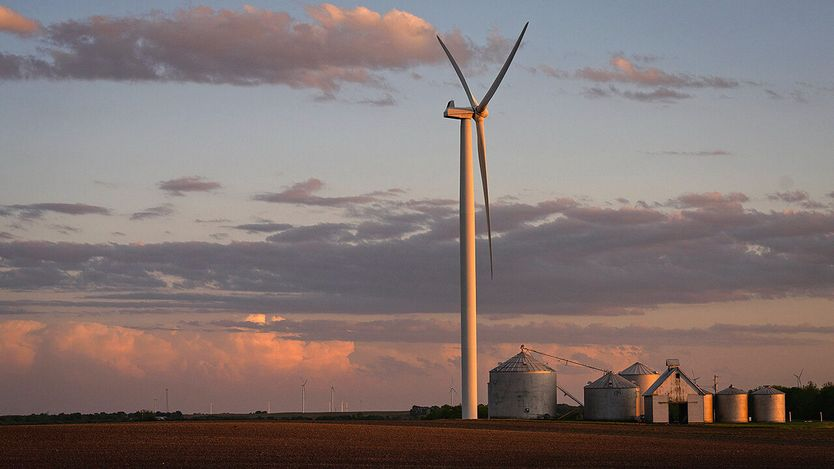
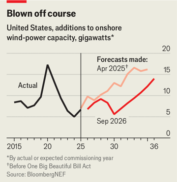

特朗普最不待见的东西
Donald Trump's least favourite thing
总统对风电的敌意，眼下还杀不死它

- 特朗普公开把气候变化称作骗局，宣称目标是不让任何一台风机建成。他没做到全停，但确实让可再生能源开发慢了下来。
- 手法一半很常规——取消风电和光伏的税收抵免；另一半很有创意——直接拿纳税人的钱补偿开发商，让它们放弃海上风电项目。
- 被按住的主要是海上风电：成本高、周期长、依赖联邦审批。今年已有五个项目的租约被中止，政府为此付给企业约39亿美元让它们退出。
- 数据中心和电气化正把美国电价推高，而陆上风电要便宜得多。作者判断，只要电价继续涨，任何一届政府最终都会被逼回“什么能源都要用”的路子。
每年九月，联合国大会召开期间，纽约都会同步举办“气候周”，各国领导人聚在一起讨论世界上最棘手的难题。但在特朗普的清单上，气候变化不在其中。9月22日他在联大演讲中唯一一次提到气候变化，是为了把它说成一场骗局；去年的联大演讲里，他更称之为“世界上最大的骗局”。多年来政策圈一直在讨论政府如何释放可再生能源的潜力，特朗普现在提供的，是一份如何把它按住的研究报告。
“我的目标，”他在今年年初说，“是不让任何一台风车被建起来。”有些手法在预料之中，比如共和党税法取消了拜登时期给风电和光伏电站的税收抵免。另一些则更有创意，比如花钱让风电开发商放弃已规划的海上项目——加州和纽约两州总检察长已在9月22日就这一做法提起诉讼。特朗普没能让可再生能源开发全部停摆，但他确实让它慢了下来。

总统对风电和光伏的主要不满，浓缩在去年一份行政令的标题里：《终止对不稳定、外资控制的能源来源给予的市场扭曲性补贴》。这话有一半是对的：风电和光伏发电确实时断时续，确实依赖海外供应链，也确实享受公共补贴。然而按政府自己的数字，就一项资产的整个生命周期而言，陆上风电和光伏的“平准化”发电成本如今已低于天然气；而时断时续可以靠储能和互补电源来管理，海外依赖可以靠与盟友的贸易协议来化解。特朗普并不买账。他的能源部长克里斯·赖特强调电力必须稳定，像天然气和煤电那样。“如果你只是有时候发电，而我们不知道是什么时候，”赖特在9月23日辩称，“那不算可靠的发电。”
公用事业级光伏的装机量已经下滑，部分原因是审批瓶颈，以及进口设备规则不断变动——去年的税法写入了判定项目是否由“受禁止的外国实体”支持的条款。但总统对风机有着特别的厌恶。他指责风机杀鸟、压低房价、致癌，总之“不合时宜”、“可悲”。海上风电尤其脆弱：每兆瓦时119美元的成本远高于天然气的77美元，建设周期漫长，还要依赖联邦审批。
特朗普第二任期第一天就签发备忘录，暂停联邦土地和水域上的风电部署许可，这当中包括所有适合海上风电的场址。随后在12月，内政部中止了五个在拜登任内拿到许可的海上风电项目租约。
法官已允许这些项目复工，但彭博新能源财经的哈里森·肖勒说，除这五个之外，到2035年预计不会再有新的海上风电项目投产。今年以来，政府已向企业支付约39亿美元，让它们放弃规划中的海上项目——用的是本应用于了结对政府诉讼的纳税人资金。通胀和高利率本已让这些项目吸引力下降，州级支持政策的不确定性更让情况雪上加霜。最先达成这类交易的法国道达尔能源的帕特里克·普亚内，这样解释政策摇摆对长周期海上项目的影响：“这行不通。”
陆上风电更便宜，每兆瓦时57美元，日子也好过一些。今年出现了一波抢装潮，开发商赶在税收抵免到期前把项目建成。但彭博新能源财经已把2029年的预测较2025年4月的展望下调了25%。除了税收抵免到期和联邦许可暂停，开发商现在还要应付“战争部”（由国防部改名而来）造成的拖延。风电项目历来需要国防部批准，以确保不干扰雷达或航线。但从2025年8月起，该部门逐渐停止审核申请。行业组织美国清洁能源协会的贾森·格鲁梅特说，自那以后“他们干脆关了灯、拉上窗帘，连会都不开了”。有150多个项目卡在这个瓶颈里，而该部门称这是出于国家安全考虑。
在特朗普持续压制可再生能源的同时，有两股力量可能把它们托起来。一位法官已命令政府恢复审核被“战争部”拖延的项目，另一位法官则暗示，限制联邦土地上的许可可能违法。更重要的是，电力需求正在爆发式增长。“总会到某个点，”格鲁梅特说，“电价涨上去、我们担心的供电够不够的问题出现，那时任何一届政府都得转向‘什么能源都要’的政策。”